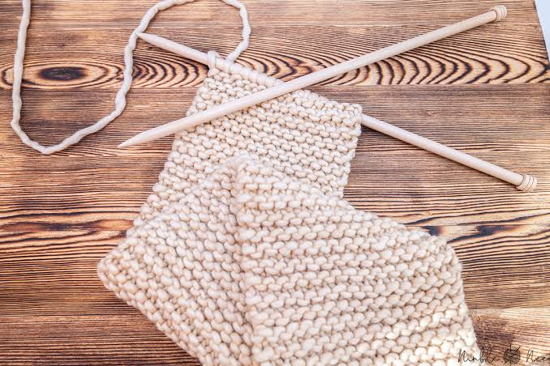

Why Knitting?
Knitting is a creative and repetitive craft that improves mental health, builds practical skills, and provides a tangible sense of accomplishment.

Knitting is a creative and repetitive craft that improves mental health, builds practical skills, and provides a tangible sense of accomplishment.